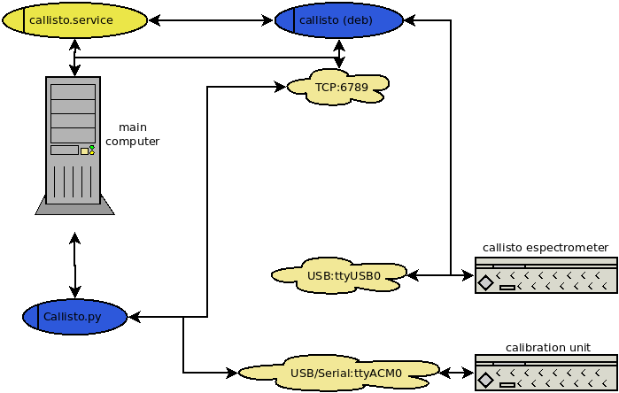

Documentação Callisto Linux!
Visão Geral
O espectrômetro Callisto <http://e-callisto.org> é um receptor heteródino de baixo custo, desenvolvido na ETH Zurich em 2006 comvistas ao estudo da atividade solar na frequência de 60 - 860 MHz.
Callisto pode ser acoplado a uma unidade de calibração, com relays controlados por um arduino uno.
A introdução de osciladores pode fazer com que a frequência original de operação do Callisto seja alterada. Para o radiotelescópio BINGO um oscilador LO 1760MHz foi utilizado para obter uma saída `IF = LO - RF`na faixa de 900 a 1700 MHz.
Callisto vem equipado com um programa para o controle do espectrômetro e um programa para controle da unidade de calibração, ambos na forma de binários para windows.
O programa de controle do espectrômetro tem uma versão para sistemas Linux, em particular um pacote deb para instalação em instalações da família Debian/Ubuntu/Raspian.
Este pacote fornece operações em uma camada de controle deste binário juntamente com a agregação de controles para a unidade de calibração.
O espectrômetro callisto se conecta a um computador controlador pela USB.
A unidade de calibração é controlada por um arduino que se conecta com um computador controlador pela porta serial ou por meio de um adaptador serial/USB.
O binário callisto controla o espectrômetro e interage via protocolo TCP.
O programa callisto.py controla o binário callisto e a unidade de calibração, por meio dos protocolos serial e tcp.
Um serviço systemd callisto.service e trabalhos do crontab automatizam as operações destes dois programas e sua sinergia.
O diagrama geral das relações entre os sistemas é conforme indicado na figura:
{kind=link}
Instalação
Uso em linha de comando
Calibração em todos os modos, com gravação de spectral overview e de arquivo FIT::
python callisto.py
Parada de qualquer serviço ou programa callisto em funcionamento com cancelamento de gravação de arquivos em andamento:
Classes e Métodos
Callisto
- class callisto.Callisto(IP=None, PORT=6789, fits_command='start', ovs_command='overview', stop_command='stop', quit_command='quit', daemon='callisto.service', executable='callisto', cal_unit=None)
Class Callisto controls the operation of spectrometer in manual mode via command line and tcp connection.
- __init__(IP=None, PORT=6789, fits_command='start', ovs_command='overview', stop_command='stop', quit_command='quit', daemon='callisto.service', executable='callisto', cal_unit=None)
- __weakref__
list of weak references to the object (if defined)
- _calibrate(mode)
Measure for calibration in single mode of operation.
- calibrate(timeout=1)
Calibrate all modes.
- connect(timeout=2)
Create socket for TCP connection with callisto software.
- do(command=None)
Open tcp socket to control callisto program.
- get_PID()
Determine PID of callisto process running as daemon and return a list with IPs of an empty list. Uses system ps.
- get_ip()
Retrieve local IP.
- record_fits(mode, time=1200)
Run a single manual fits measurement.
- record_ovs(mode, time=180)
Run a single manual spectrum overview.
- run(mode)
Run a manual measurement with callisto in the mode determined in the argument. Appropriate config files should be present.
- run_daemon(manager='sudo /bin/systemctl', action='start')
Start callisto daemon.
- stop()
Stop every instance of callisto program running. First stops de systemd service, that aggresively kills all remaining processess. Needs sudoer rules inplace.
CalibrationUnit
- class callisto.CalibrationUnit(tty='/dev/ttyACM0', baudrate=9600, bytesize=8, parity='N', stopbits=1, timeout=1, version='Version: ETHZ Arduino_PrototypeV85.ino; 2016-08-17/cm')
Class CalibrationUnit controls the arduino which, in turn, controls the relay switched in the calibration unit of callisto spectrometer via serial port.
- __init__(tty='/dev/ttyACM0', baudrate=9600, bytesize=8, parity='N', stopbits=1, timeout=1, version='Version: ETHZ Arduino_PrototypeV85.ino; 2016-08-17/cm')
Construtor da classe de calibração. Todas as propriedades da porta serial podem ser configuradas. A única realmente fundamental é a port tty.
- Parameters
tty –
baudrate –
bytesize –
parity –
stopbits –
timeout –
version (str) – check arduino version to confirm it is callisto calibration unit version.
- __weakref__
list of weak references to the object (if defined)
- check()
Check if device in serial may respond as a Callisto Callibration Unit by checking the version of software being used.
- connect()
Star serial connection with arduino in calibration unit.
- set_relay(mode)
Set relay state in calibration unit.